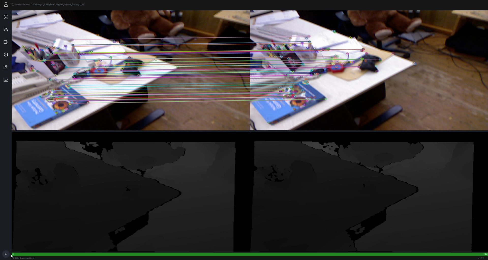

Video Frames
The videos used in this project come from the RGBD SLAM Dataset. Each frame contains an image along with its corresponding depth data. Using the OpenCV library, keypoints are extracted from each image. These are visually distinctive features such as corners or blobs. Each keypoint includes its 2D position in the image, the scale at which it was detected, its orientation relative to the image gradient, and a descriptor, which is a compact vector representing the texture around the keypoint. This allows matching keypoints between frames, from which the camera’s motion in 3D space is estimated.
